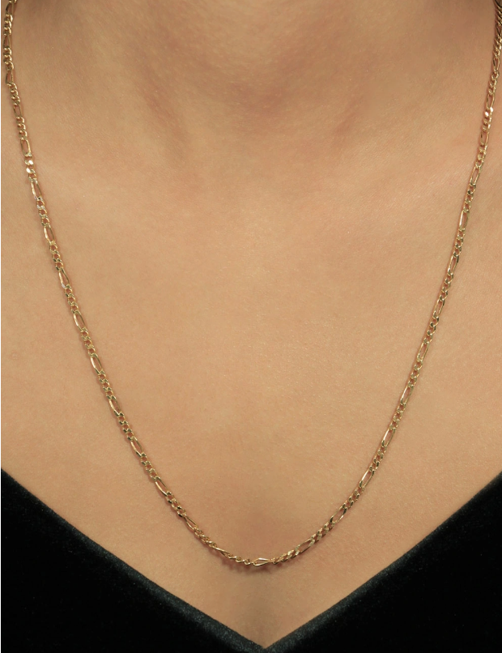
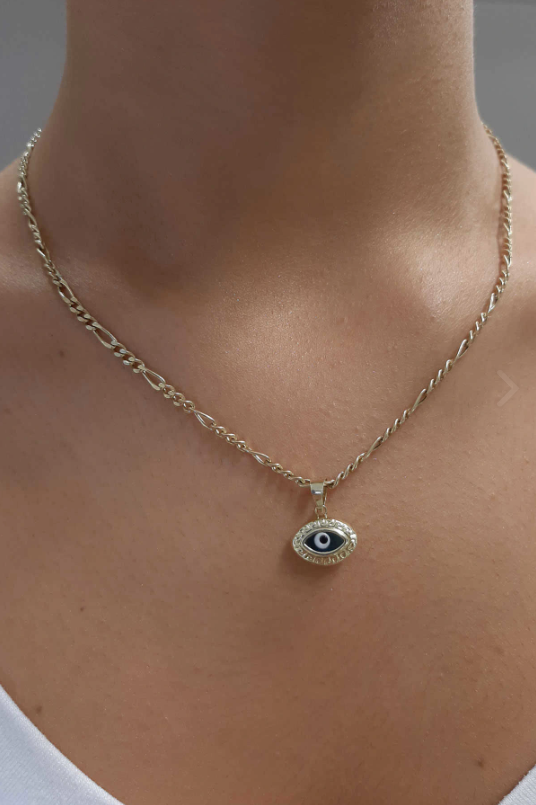

Figaro
14 Ayar Altın Burgu Sade Figaro Zincir Kolye 3.70 mm
Zincir genişliği: 3,70 mm
| Ölçü | Ağırlık |
| 47 cm | 6.67 gr |
| 50 cm | 7.10 gr |
| 54 cm | 7.72 gr |
| 55 cm | 7.82 gr |

14 Ayar Altın Figaro Zincir 2.65 mm
| Ölçü | Ağırlık |
| 59 cm | 5.12 gr |

14 Ayar Altın Figaro Zincir Kolye
Genişlik: 2.80 mm
| Ölçü | Ağırlık |
| 50 cm | 5.38 gr |